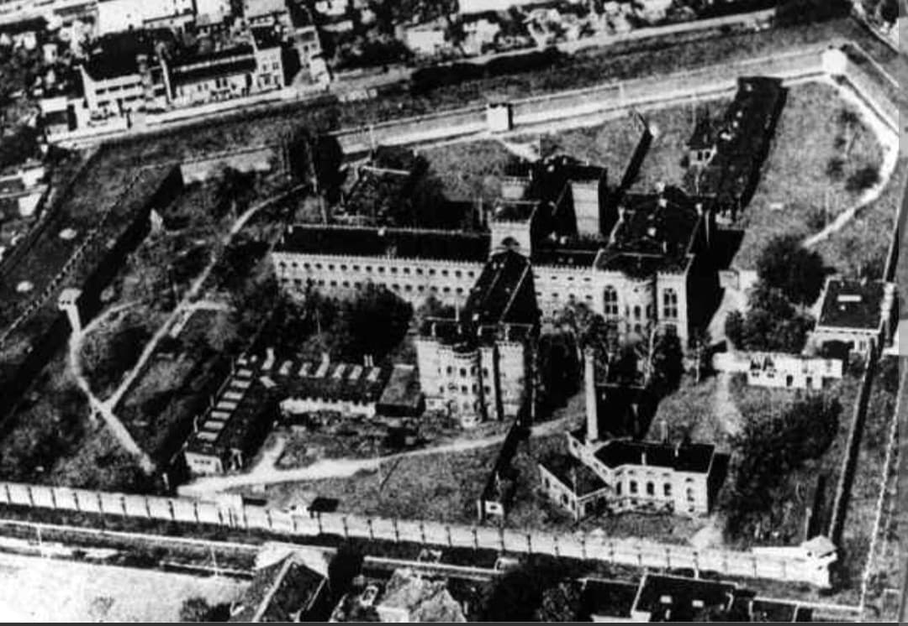
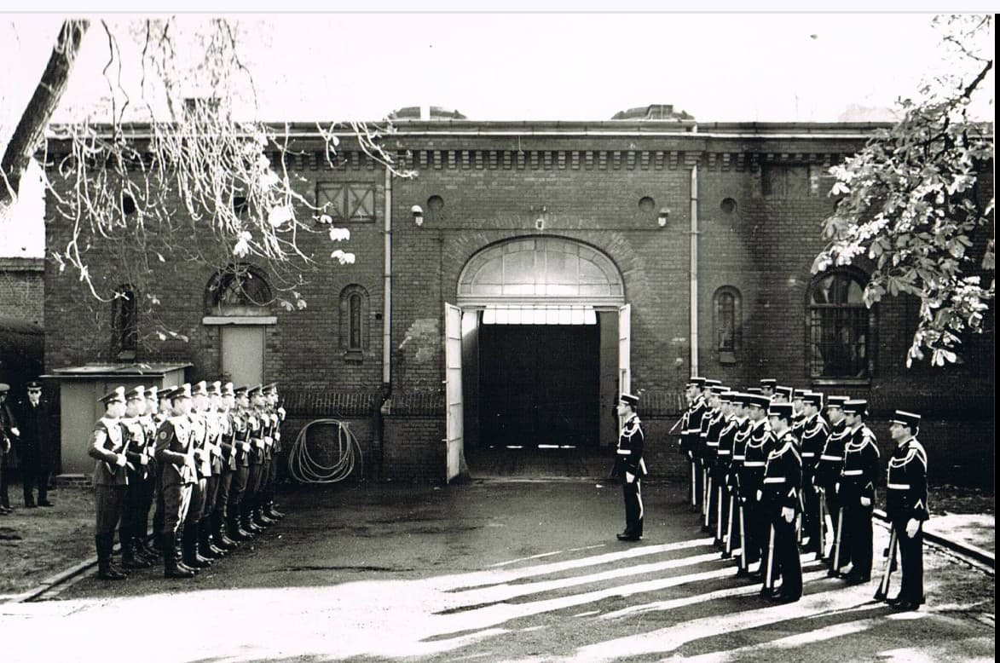
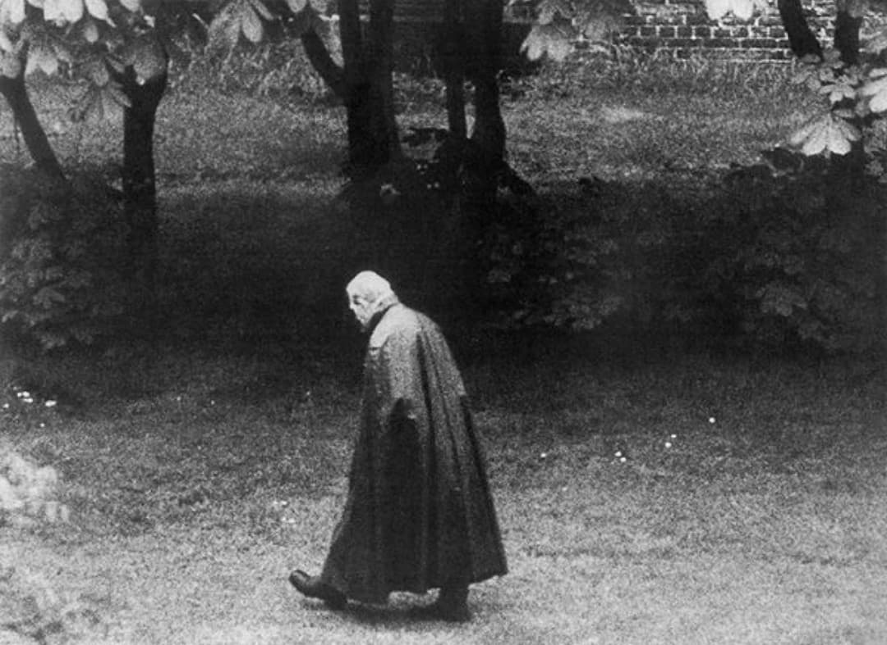
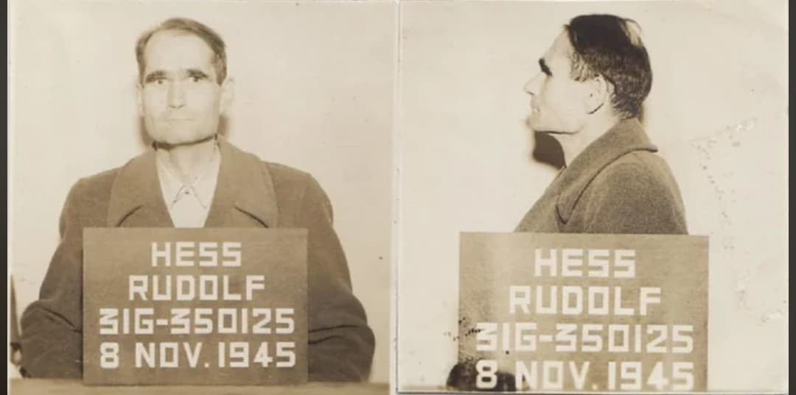
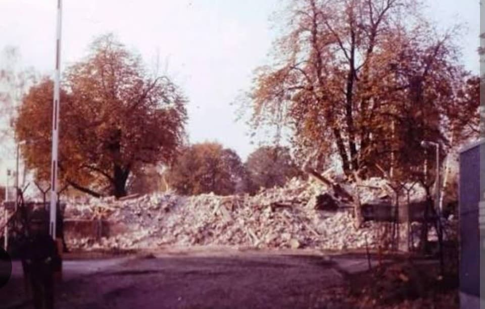

SPANDAU
La prison la plus absurde de la Guerre froide
Introduction

La prison de Spandau, située à Berlin-Ouest, est l’un des lieux les plus singuliers de l’histoire
de l’après-guerre. Administrée par les quatre puissances alliées — États-Unis, Royaume-Uni, France
et URSS — elle devient, à partir de 1966, une anomalie totale : une prison entière pour un seul homme.
Ce prisonnier, c’est Rudolf Hess, condamné à la prison à vie lors du procès de Nuremberg.
Pendant plus de vingt ans, il vit dans un isolement presque absolu, au cœur d’un dispositif
politico-symbolique qui dépasse largement sa personne.
Origine et rôle de la prison

Construite au XIXᵉ siècle, la prison de Spandau est utilisée après 1945 pour y enfermer les
dirigeants nazis condamnés à Nuremberg. Elle fonctionne selon un système quadripartite :
chaque puissance assure la gestion pendant un mois, avant de céder la place à la suivante.
Ce fonctionnement entraîne des changements constants : uniformes, règles, cuisines, procédures.
Les prisonniers vivent dans un environnement où l’autorité change en permanence.
Administration quadripartite

Les quatre puissances alliées — États-Unis, Royaume-Uni, France et URSS — se relaient pour
administrer la prison. Chaque mois, une nouvelle armée prend le contrôle total : direction,
surveillance, cuisine, soins médicaux, entretien.
Ce système, conçu pour symboliser l’unité des Alliés, devient progressivement une contrainte lourde,
surtout lorsque le nombre de prisonniers diminue.
Le quotidien de Rudolf Hess

À partir de 1966, Hess devient le seul détenu de Spandau. Son quotidien est extrêmement réglementé :
réveil, promenade, jardinage, lecture, repas, coucher. Il n’a pas le droit de parler aux gardiens,
sauf pour des besoins essentiels.
Ses livres sont contrôlés, ses lettres censurées, ses visites limitées. L’isolement est total,
renforcé par l’absence de tout autre prisonnier.
Effectifs : 40 à 60 gardes pour un seul homme

Malgré la présence d’un seul détenu, la prison continue de fonctionner comme un établissement complet.
En moyenne, 40 à 60 gardes sont mobilisés en permanence pour surveiller un seul homme.
Ce ratio, unique dans l’histoire contemporaine, résulte principalement de l’intransigeance soviétique,
qui refuse toute réduction d’effectifs.
Chaque puissance doit fournir ses propres équipes : gardes, officiers, cuisiniers, médecins, personnel
administratif. Spandau devient ainsi un symbole politique plus qu’une prison fonctionnelle.
La mort de Hess et la destruction de la prison

Rudolf Hess meurt le 17 août 1987 dans le jardin de la prison. La version officielle parle d’un suicide
par pendaison, bien que des théories alternatives existent. Aucune preuve solide n’a jamais remis en
cause la version des Alliés.
Quelques semaines après sa mort, la prison est entièrement détruite. Les débris sont dispersés pour
éviter que le lieu ne devienne un site de pèlerinage néonazi. Spandau disparaît ainsi physiquement,
mais son histoire reste un symbole de la Guerre froide.